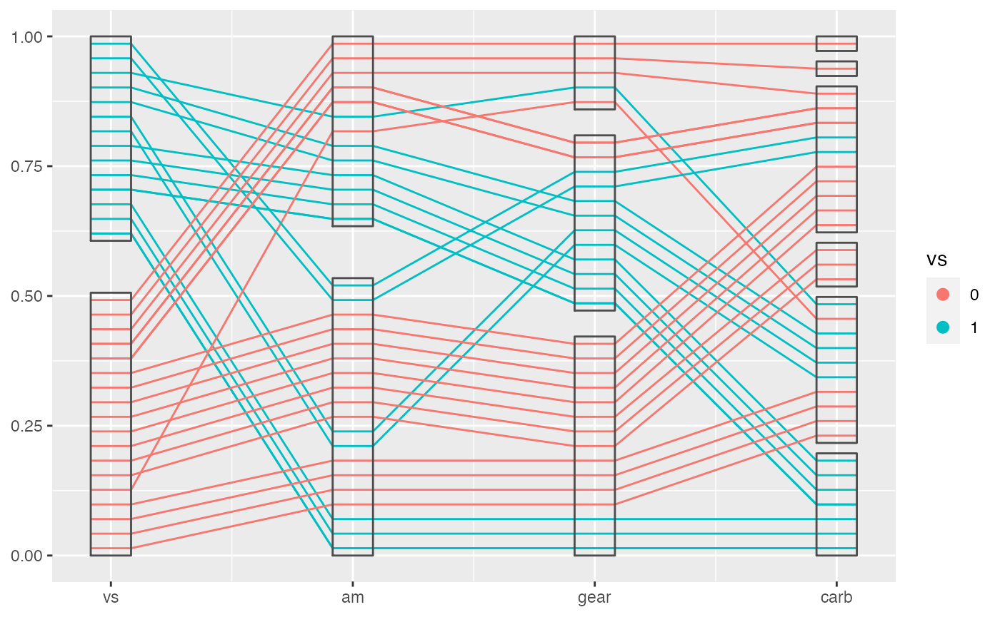
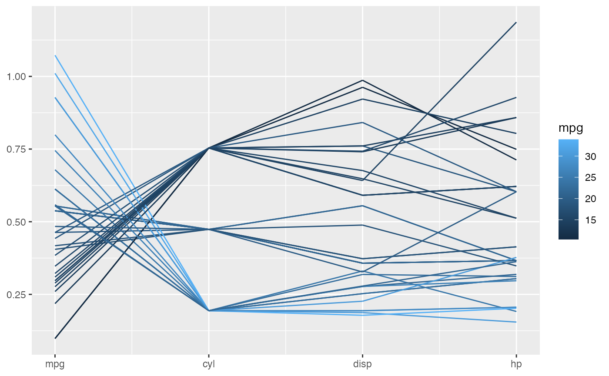

Introduction to ggpcp
ggpcp.RmdThis document shows you how to make use of ggpcp functionalities with ggplot2 to draw an ideal parallel coordinate plot with numeric, categorical vairables or both. It provides a set of tools to deal with various cases and provides a good solution to draw factor variables.
Work flow
To use ggpcp package functionalities, we generally need to do the following steps:
Choose the columns you want to use to draw the plot with gather_pcp().
Pass the outcome to the transform_pcp() to do the transformation.
Pass the transformed data to ggplot functions and ggpcp layer functions to draw the plot.
Transform the data from a wide form to a long form with gather_pcp()
gather_pcp() allows you to transform the orginal data to the required form of ggpcp. It chooses the selected columns and transform those columns from a wide form to a long form while keeping all the original variables in the data set. The returned data frame has five columns for directly use of ggpcp, which will be passed to geom_pcp() later:
- id: identify the observations.
- name: the original variable names.
- value: the values for the corresponding varibles indicated by name
namename. - level: for factor variables, this indicates the level of the factor variable. For numeric variables, it’s the numeric value of that variable which is the same the value column.
- class: the class for the variable indicated in name, usually “numeric” and “factor”.
The original data are duplicated and kept for ease of future use when you want to map a variable to an aesthetics like color or size etc. An example is:
data("mtcars")
head(mtcars)
#> mpg cyl disp hp drat wt qsec vs am gear carb
#> Mazda RX4 21.0 6 160 110 3.90 2.620 16.46 0 1 4 4
#> Mazda RX4 Wag 21.0 6 160 110 3.90 2.875 17.02 0 1 4 4
#> Datsun 710 22.8 4 108 93 3.85 2.320 18.61 1 1 4 1
#> Hornet 4 Drive 21.4 6 258 110 3.08 3.215 19.44 1 0 3 1
#> Hornet Sportabout 18.7 8 360 175 3.15 3.440 17.02 0 0 3 2
#> Valiant 18.1 6 225 105 2.76 3.460 20.22 1 0 3 1
# make the output as tibble to be consistent
mtcars %>% gather_pcp(1:4) %>% head()
#> id name value level class mpg cyl disp hp drat wt qsec vs am
#> 1 1 mpg 21 21.0 numeric 21.0 6 160 110 3.90 2.620 16.46 0 1
#> 2 2 mpg 21 21.0 numeric 21.0 6 160 110 3.90 2.875 17.02 0 1
#> 3 3 mpg 22.8 22.8 numeric 22.8 4 108 93 3.85 2.320 18.61 1 1
#> 4 4 mpg 21.4 21.4 numeric 21.4 6 258 110 3.08 3.215 19.44 1 0
#> 5 5 mpg 18.7 18.7 numeric 18.7 8 360 175 3.15 3.440 17.02 0 0
#> 6 6 mpg 18.1 18.1 numeric 18.1 6 225 105 2.76 3.460 20.22 1 0
#> gear carb
#> 1 4 4
#> 2 4 4
#> 3 4 1
#> 4 3 1
#> 5 3 2
#> 6 3 1The gather_pcp() has its first argument as data, in which case you can use a pipe operator as in other tidyverse packages. The second argument ... accept many ways of selection of vatiables:
- positions: 1:3, c(1, 3, 2)
- names: mpg, cyl
- selectors: starts_with(“m”)
- other expressions: mpg:cyl, sample(1:3, size = 3)
The following code does the exact same selection as the previous one.
Scaling the data with transform_pcp()
In most cases, you will need to scale your data in a proper way to best show them in a parallel coordinate plot. And if you have factor variables in your data, they will be shown in the range of 0-1, so you will need to scale the numeric variables to that range before drawing the plot.
We provides four approaches to implement scaling by transform_pcp():
- “std”: univariately, subtract mean and divide by standard deviation
- “robust”: univariately, subtract median and divide by median absolute deviation
- “uniminmax”: univariately, scale so the minimum of the variable is zero, and the maximum is one
- “globalminmax”: gobal scaling, the global maximum is mapped to one, global minimum across the variables is mapped to zero
To continue the work flow:
mtcars %>% gather_pcp(1:4) %>% transform_pcp(method = "uniminmax") %>% head()
#> # A tibble: 6 x 16
#> # Groups: name [1]
#> id name value level class mpg cyl disp hp drat wt qsec
#> <int> <chr> <dbl> <dbl> <chr> <dbl> <dbl> <dbl> <dbl> <dbl> <dbl> <dbl>
#> 1 1 mpg 0.451 21 numeric 21 6 160 110 3.9 2.62 16.5
#> 2 2 mpg 0.451 21 numeric 21 6 160 110 3.9 2.88 17.0
#> 3 3 mpg 0.528 22.8 numeric 22.8 4 108 93 3.85 2.32 18.6
#> 4 4 mpg 0.468 21.4 numeric 21.4 6 258 110 3.08 3.22 19.4
#> 5 5 mpg 0.353 18.7 numeric 18.7 8 360 175 3.15 3.44 17.0
#> 6 6 mpg 0.328 18.1 numeric 18.1 6 225 105 2.76 3.46 20.2
#> # … with 4 more variables: vs <dbl>, am <dbl>, gear <dbl>, carb <dbl>Draw lines with geom_pcp()
After all the preparation steps above, you can pass the output data to ggplot2 and make use of the function geom_pcp() to draw the basic coordinate parallel coordinate plot, which is composed by lines and axes.
There are five aesthetics required for the layer functions of ggpcp. They provide necessary information to draw the plot and know the levels for factor variables. (note: id is not actually useful as we assume the id is from 1 to nrow now, which is the exact outcome following the steps above. I think we can remove it later.)
mtcars %>%
gather_pcp(1:4) %>%
transform_pcp(method = "uniminmax") %>%
ggplot() +
geom_pcp(aes(id = id, name = name, value = value, level = level, class = class))
We can see from the plot above, the second variable is actually a categorical one. So we can treat it as a factor variable to get a better plot, which evenly spreads the observations for the factor variable and provides the ability to track each observation. And add some color according to that.
mtcars %>%
mutate(cyl = factor(cyl)) %>%
gather_pcp(1:4) %>%
transform_pcp(method = "uniminmax") %>%
ggplot(aes(id = id, name = name, value = value, level = level, class = class)) +
geom_pcp(aes(color = cyl))
This is an extremely powerful functionality when it is used to deal with a sequence of factor variables. (When there is no numeric variable, we don’t need to scale anything with transform_pcp().)
mtcars %>%
mutate(vs = factor(cyl),
am = factor(am),
gear = factor(gear),
carb = factor(carb)) %>%
gather_pcp(vs:carb) %>%
ggplot(aes(id = id, name = name, value = value, level = level, class = class)) +
geom_pcp(aes(color = vs))
Draw boxes with geom_pcp_box()
To show the levels of factor variables clearer, you can use geom_pcp_box(), which is used to draw boxes for the levels. We can see from the following example.
mtcars %>%
mutate(vs = factor(cyl),
am = factor(am),
gear = factor(gear),
carb = factor(carb)) %>%
gather_pcp(vs:carb) %>%
ggplot(aes(id = id, name = name, value = value, level = level, class = class)) +
geom_pcp(aes(color = vs)) +
geom_pcp_box()
If you want to see the boxes not black segments, you need to provide another argument: boxwidth to, unfortunately, both layer functions.
mtcars %>%
mutate(vs = factor(cyl),
am = factor(am),
gear = factor(gear),
carb = factor(carb)) %>%
gather_pcp(vs:carb) %>%
ggplot(aes(id = id, name = name, value = value, level = level, class = class)) +
geom_pcp(aes(color = vs), boxwidth = 0.2) +
geom_pcp_box(boxwidth = 0.2)
Draw bands with geom_pcp_band()
You can also draw bands with geom_pcp_band(). This can adds a layer to lines or boxes to compose a more meaningful plot.
mtcars %>%
mutate(vs = factor(cyl),
am = factor(am),
gear = factor(gear),
carb = factor(carb)) %>%
gather_pcp(vs:carb) %>%
ggplot(aes(id = id, name = name, value = value, level = level, class = class)) +
geom_pcp(aes(color = vs), boxwidth = 0.2) +
geom_pcp_box(boxwidth = 0.2) +
geom_pcp_band(aes(fill = vs), boxwidth = 0.2, alpha = 0.2)
Sometimes smaller bands are merged to a larger band, which is meaningful in showing a tidy plot, but will make it more difficult to color the bands. So we provide an argument to control this behavior. When you turn on the merge, the color/fill aesthetics is not reliable because geom_pcp_band will use the first observation in the merged band to color the whole band.
mtcars %>%
mutate(vs = factor(cyl),
am = factor(am),
gear = factor(gear),
carb = factor(carb)) %>%
gather_pcp(vs:carb) %>%
ggplot(aes(id = id, name = name, value = value, level = level, class = class)) +
geom_pcp(aes(color = vs), boxwidth = 0.2) +
geom_pcp_box(boxwidth = 0.2) +
geom_pcp_band(boxwidth = 0.2, fill = "blue", alpha = 0.2, merge = TRUE)
Adjust boxwidth, rugwidth and interwidth
ggpcp also provides a way to modify the parallel coordinate plot according to your need:
- boxwidth: adjust the width of boxes (for factor variable)
- rugwidth: adjust the width of rugs (for numeric variable)
- interwidth: adjust the distance between every two adjacent variables
These arguments accept a scalar or a vector with equal length of the object they control.
mtcars %>%
mutate(vs = factor(cyl),
am = factor(am),
gear = factor(gear),
carb = factor(carb)) %>%
gather_pcp(mpg, vs:carb) %>%
transform_pcp(method = "uniminmax") %>%
ggplot(aes(id = id, name = name, value = value, level = level, class = class)) +
geom_pcp(aes(color = vs), boxwidth = 0.2, rugwidth = 0.2, interwidth = c(1, 1, 1.5, 2)) +
geom_pcp_box(boxwidth = 0.2, rugwidth = 0.2, interwidth = c(1, 1, 1.5, 2))
Break the factor block
Our default method works great for a sequence of factor variables, but as the number variables increases, it becomes messier at the right side of the factor block, because the number of combinations of levels of variables increases. This is a conceptual problem which makes it hard to show the pattern of the data in these cases.
mtcars %>%
mutate(vs = factor(cyl),
am = factor(am),
gear = factor(gear)) %>%
gather_pcp(vs:gear) %>%
ggplot(aes(id = id, name = name, value = value, level = level, class = class)) +
geom_pcp(aes(color = vs), boxwidth = 0.5) +
geom_pcp_box(boxwidth = 0.5)
We provide a argument to partly sovle this problem. By making use of breakpoint in geom_pcp(), we can actually break a factor block to two or more smaller parts, which will better show the relations between the adjacent variables while keep tracking of individual observations.
mtcars %>%
mutate(vs = factor(cyl),
am = factor(am),
gear = factor(gear)) %>%
gather_pcp(vs:gear) %>%
ggplot(aes(id = id, name = name, value = value, level = level, class = class)) +
geom_pcp(aes(color = vs), boxwidth = 0.5, breakpoint = 2) +
geom_pcp_box(boxwidth = 0.5)